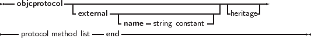
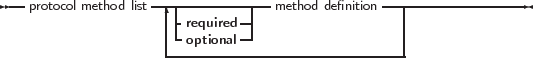

In Objective-C, protocols play the role that interfaces play in Object Pascal, but there are some differences:
Objective-C classes can indicate which protocols they implement in the class definition, as could be seen in the syntax diagram for Objective-C classes.
The following diagram shows how to declare a protocol. It starts with the objcprotocol keyword:
_________________________________________________________________________________________________________
Protocol type


___________________________________________________________________
As in the case of objective-Pascal classes, the external specifier tells the compiler that the declaration is an import of a protocol defined elsewhere. For methods, almost the same rules apply as for methods in the Objective-Pascal class declarations. The exception is that message specifiers must be present.
The required and optional specifiers before a series of method declarations are optional. If none is specified, required is assumed. The following is a definition of a protocol:
Note that in the class declaration, the message specifier was omitted. The compiler (and runtime) can deduce it from the protocol definition.